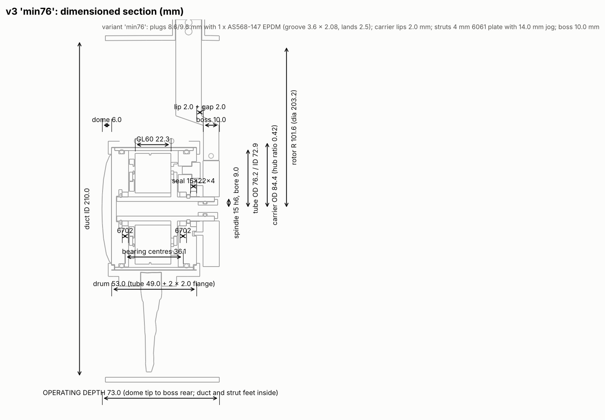
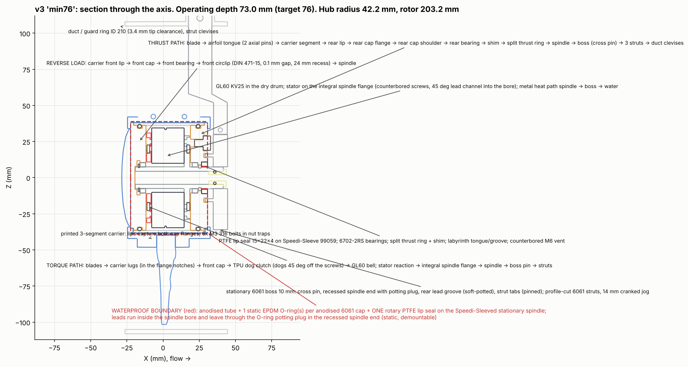
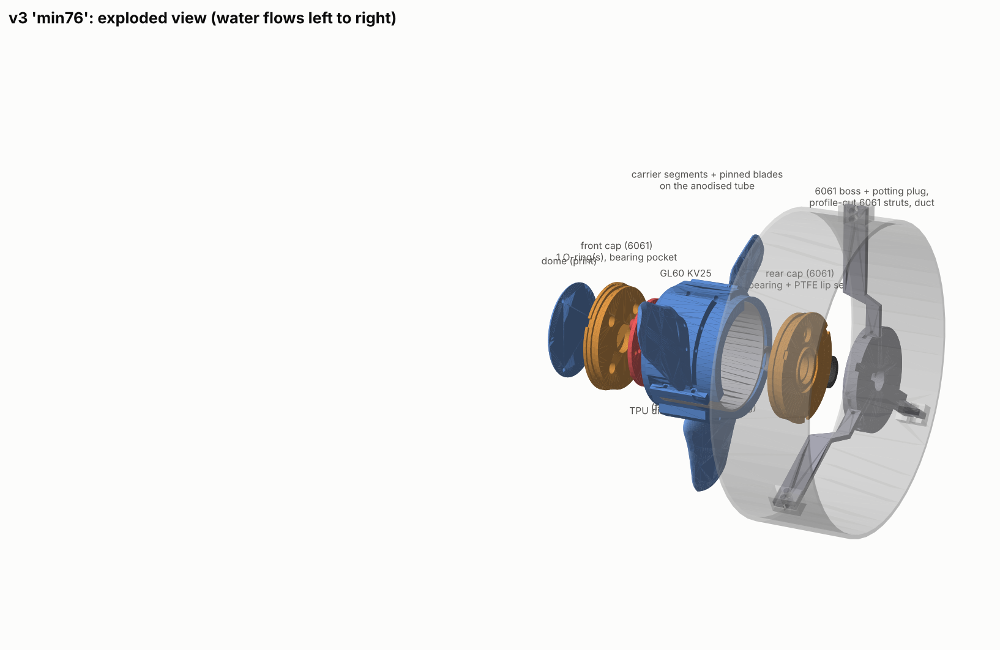
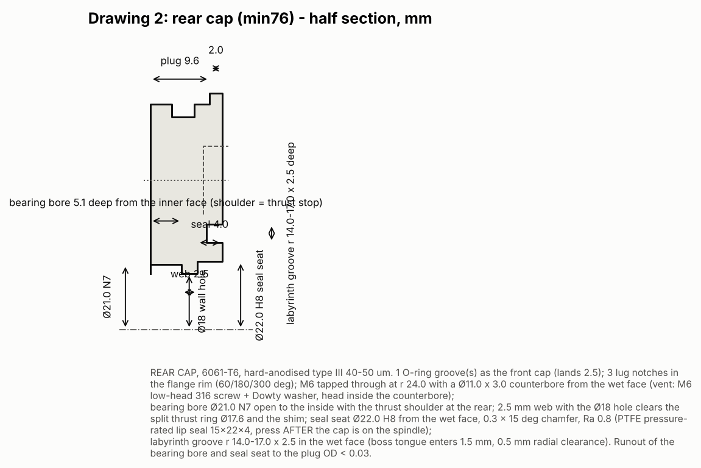
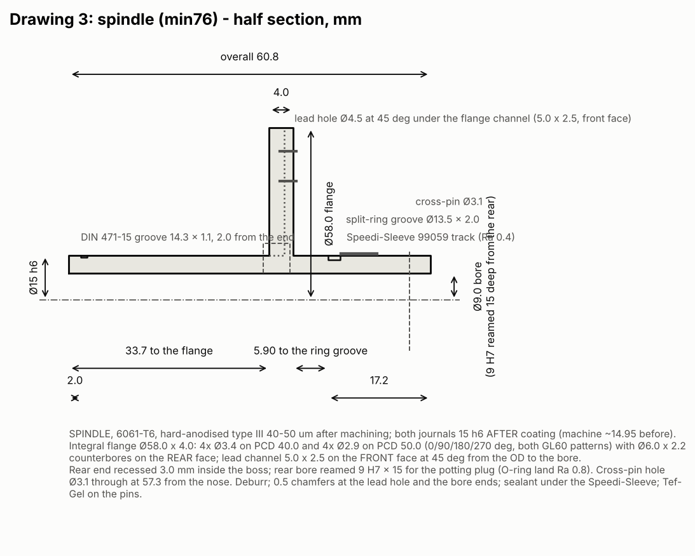
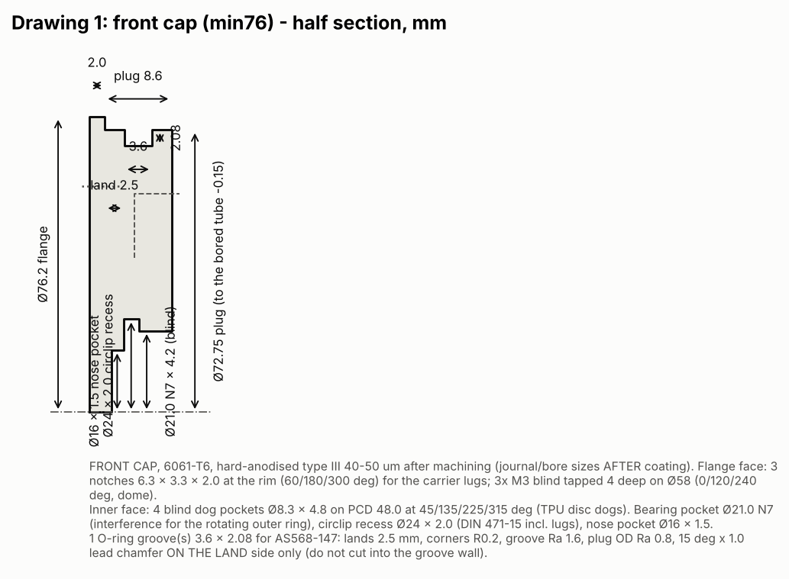
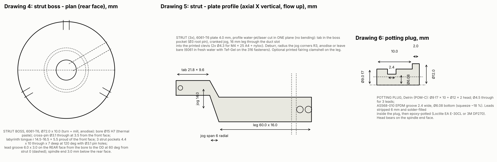

Portable hydrokinetic turbine: redesign v3.1 package
Reviewed, corrected and re-exported design package for the 203.2 mm rotor in a 76 mm operating envelope. Model predictions only: nothing has been printed, machined, immersed or tested. Source files, STEP/STL exports, drawings, BOM and plans are in the repository package cad/turbine_redesign_v3/.
Status: design package with reviewed, corrected and re-exported CAD and a transparent calculation model. No part has been
printed, machined, immersed or tested. Every performance figure is a model prediction; every manufacturer value is tagged with its
source in the BOM; the manufacturer web pages themselves were not reachable from this session (E13). One correction-and-review
cycle was run: 40 review findings (R01-R40) and 16 first-draft findings are logged with their corrections and
re-verification in docs/ERROR_LOG.md; the final integrated check of the exported files is in section 9.
1. Outcome against the requirements
| Requirement | Result | Evidence |
|---|---|---|
| 203.2 mm rotor, 1-2 m/s fresh water, primarily 3D-printed | met: rotor 203.2 mm in a duct of ID 210 (3.4 mm tip clearance); printed blades, carrier, dome, drive disc, duct (9 print files); metal only where sealing, bearing seats, thrust, heat or strut bending require it | cad/out/min76_*, section 5 |
| 76 mm TOTAL OPERATING depth (cable exits, bends, fasteners, guard included) | met on nominal geometry by the "min76" variant: 73.0 mm from dome tip to boss rear face, with the duct, strut legs and clevises, the cable path (inside the spindle and the boss rear-face groove), the vent screw and every screw head inside that span; margin 3.0 mm against a worst-case stack of about 1.0 mm (tube cut +-0.3, prints +-0.2, machining +-0.1). The "robust" variant (6902 bearings, 5 mm seal, two O-rings per cap, 9 mm dome) is 86.8 mm: a declared no-go against 76 mm by 10.8 mm and the fall-back if the 6702 bearings or the 4 mm seal fail their bench gates. Packed depth (rotor and drum without the boss, struts and duct) is 61.0 mm. | section 4, cad/out/min76_dimensioned.png, docs/FINAL_CHECK.txt |
| Credible net power at each flow (12.8 V LiFePO4, Victron buck MPPT) | 1.0 m/s: 2.2 W DC / 1.8 W into the battery; 1.5 m/s: 10.2 / 9.4 W; 2.0 m/s: 25.2 / 23.6 W (water-to-DC 13 % / 19 % / 19 %). Model values; honest band -30 % / +10 % (polar, roughness, GL60 constants, windage). | section 7 |
| Self-start at 1.0 m/s | not demonstrated; model-marginal. Static rotor torque 0.059 N m against an assumed breakaway of 0.047 N m with the PTFE seal (x1.25) and 0.062 N m with an NBR seal (x0.95: fails). Reliable from about 1.2 m/s (x1.80) on the assumptions. Gates 5 and 9 decide. | section 7 |
| Waterproof for continuous immersion (provisional 0.3-2 m axis depth) | boundary = hard-anodised 6061 tube with bored lands + 1 EPDM O-ring per anodised 6061 cap + one PTFE pressure-rated lip seal on a Speedi-Sleeve + an O-ring potting plug in the spindle end; no printed surface and no screw in the boundary; squeeze 14.9-20.6 % over the bore tolerance; seal differential 0.31 bar (PTFE seal rated 5 bar); internal overpressure from stator heat 2.9 kPa at the current limit -> minimum axis depth 0.29 m; vacuum, submersion, thermal-cycle and rotating tests defined; not demonstrated | section 6, docs/VALIDATION_PLAN_v3.md |
| Overspeed / overvoltage protection, dump and brake behaviour, full-battery and disconnected-load cases | independent of the charger: voltage-monitor relay (engage 45 V / release 12 V, no cycling) into a submerged 22 ohm dump block; 3-phase short brake switch; 5KP90A TVS; behaviour tabulated per flow in section 7 (torque-balanced); 3 m/s flood = dump engaged (cavitation number 1.09) with 20 W in the winding: survivable, not continuous | sections 7-8 |
| Reviewed, corrected, consistent exports | four independent review passes; 40 findings corrected and re-verified; final integrated check on the exported files (section 9) | docs/ERROR_LOG.md, docs/FINAL_CHECK.txt |
Provisional assumptions used (not confirmed requirements): 0.3-2 m axis depth; a 3 m/s flood as an off-design survival case; 12.8 V LiFePO4 (13.2 V charging); ASA filament with assumed wet allowables; 15 C water; the GL60 values cited by the independent review (KV 21.5, R_LL 5.5 ohm, L_LL 2.72 mH, 14 pole pairs); PTFE lip-seal friction 7.5 mN m running / 15 mN m breakaway (NBR 15 / 30); GL60 cogging 24 mN m; no-load loss 1.0 W at 700 rpm. Their consequences are shown where they matter (section 7 sensitivities).
2. Audit of the supplied Configuration A (independently re-measured)
All seven review findings were reproduced on 01_original_inputs/A_assembly.step with OpenCascade (audit/verify_cad_audit.py):
(all solids incl. duct ref): 188.600 mm (review: 188.6)
rotor alone: 78.800 mm (review: 78.8)
common volume rotor/collar: 1369.60 mm3
common volume nacelle_tube/oring_0: 165.15 mm3
common volume lip_seal/speedi_sleeve: 75.61 mm3
common volume lip_seal/shaft: 5.27 mm3
common volume strut_0/duct_ring: 2532.56 mm3
common volume clamp_half_1/strut_2: 70.95 mm3
common volume clamp_half_2/strut_0: 70.95 mm3
common volume bearing_1/front_cap: 0.00 mm3
common volume coupling/bell_adapter: 0.00 mm3
common volume shaft/coupling: 0.00 mm3
bearing centres: 46.115 and 54.115 -> spacing 8.000 mm (review: 8)
rear bearing protrudes past front-cap end by 0.500 mm (review: 0.5)
shaft cylindrical radii: [1.6, 6.0] -> circlip groove (r=5.75) present? False
front cap cylindrical radii: [8.0, 11.0, 14.0, 35.37, 37.45, 40.0] -> internal circlip groove (r~14.6-15.2)? False
nacelle tube cylindrical radii: [37.5, 40.0] -> radial screw holes (r=1.6)? False
rear cap radii: [1.7, 2.5, 5.0, 11.0, 35.37, 37.45, 40.0]
motor radii: [10.0, 33.5, 34.5] (no mounting holes modelled if only 10/33.5/34.5)
| Finding (reproduced value) | Nature | Resolution in v3.1 |
|---|---|---|
| Rigid depth 188.600 mm; rotor alone 78.800 mm | real | architecture changed: generator inside the hub drum; min76 73.0 mm total |
| Rotor/collar common volume 1369.60 mm3 | real rigid interference | no collar on the rotor; all 780 rigid part pairs checked: 0 overlap (section 9) |
| Shaft and cap without retaining-ring grooves; no cap retention | real | spindle DIN 471-15 groove (reverse thrust) + split 316 thrust ring (operating thrust); caps captured both ways by the carrier lips and lugs |
| Bearings 8.000 mm apart; rear bearing 0.500 mm proud of the cap | real | bearings 36.1 mm apart (front cap / rear cap), fully housed, cross-located, end play shimmed to 0.1-0.2 |
| Strut/duct and clamp/strut overlaps; duct behind the rotor | real interface gaps | struts tabbed into the boss and clamped in duct clevises; duct spans the rotor plane with 3.4 mm tip clearance |
| No cable hardware (penetrator, nut, bend) in the envelope | real | leads inside the hollow spindle, O-ring potting plug in the recessed spindle end, lead groove in the boss rear face, cable along a strut: all inside the envelope |
| O-ring / lip overlaps (165 mm3 x4, 5-76 mm3) | intentional undeformed flexible geometry | kept as such; squeeze computed numerically instead |
The earlier standalone rotor (earlier_turbine_rotor_8in_3blade.step) is the same blade family as A's rotor but with a 50.8 mm
hub; it is not reused: v3 regenerates the blades for the 84.4 mm carrier.
3. Group member's analytical model: reproduced, reconstructed and corrected
Reproduction. model/reproduce_trial1.py rebuilds all 20 strips from the trial inputs. Worst deviation per exported column
(after the export's own rounding): r 0.11 %, lambda_r 0.003 %, phi 0.001 %, a 0.014 %, a' 0.20 %,
chord 0.43 %, twist 0.001 %, F 0.012 %, drag factor 0.005 %, mass flow 0.004 %, swirl 0.021 %, strip torque 0.31 %, W 0.001 %, Re 0.001 %.
Totals: torque 0.4995 (export 0.4995) N m; water power 132.003 (132.003) W; Cp 0.392220 (0.392220); Ke 0.056172; E 5.823 V; fixed-speed Pe,max 8.076 (8.08) W.
Reconstructed equations (labelled as such; the original formulas were not supplied): a from the Glauert optimum lambda_r^2 = (1-a)(4a-1)^2/(1-3a); a' from a'(1+a') lambda_r^2 = a(1-a); tan(phi) = (1-a)/((1+a') lambda_r); chord from momentum matching c = 8 pi r a sin^2(phi) / (B C_L (1-a) cos(phi)) (no tip loss in the chord); twist = phi - 5 deg; F = Prandtl tip x hub loss (hub form with r_h in the denominator); drag factor 1 - (C_D/C_L)/tan(phi); strip torque = rho 2 pi r dr V (1-a) x 2 a' omega r x r x F x drag factor; W = sqrt((V(1-a))^2 + (omega r (1+a'))^2); Re = W c / nu; Ke = 60/(2 pi Kv); E = Ke omega; Pe,max = (E - 2 Vf)^2 / (4 Rg). Damaged symbols resolved by these equations: the "?" columns are lambda_r, phi (deg), alpha-related twist (deg), and the radial-width cell "0.003 [mm]" is 2.955 mm stored in metres and display-rounded. Not reconstructed: lambda_run 6.493, the 0.1646 cell and the 1.55 ratio.
What was wrong or incomplete in the trial, and the correction: 1. The electrical "8.08 W" is the fixed-speed maximum of a matched resistive load at 990 rpm: it needs I = 3.35 A at V = 2.41 V (below the 3 V charger minimum) and only Ke I = 0.188 N m of generator torque against 0.499 N m of rotor torque: not an operating point. Corrected: the rotor curve and the generator/charger load law are solved together across speed (section 7); the 170 KV / 0.72 ohm machine is replaced because Km = Kt/sqrt(R) = 0.066 cannot absorb the torque at useful voltage. 2. The polar (C_L 1.0, C_D 0.0127 at 5 deg, Re 2e5) is not identified and is applied at Re 7.5e4-8.1e4 where any such section has 1.5-2.5x the drag and earlier stall. Corrected: the v3 BEM uses a Reynolds-dependent NACA 44xx model (drag scaling Re^-0.8 anchored at 1.5e5) evaluated per element at the real Re. Printed roughness adds an estimated 0.01-0.02 to Cd: the honest Cp band is widened by -0.03 for it. 3. Hub radius 29.8 mm was the motor radius + 2 mm wall; the actual assembly needs 42.2 mm (tube 76.2 + carrier wall) and the printed blade starts at the pad top, r = 48.2 mm: the BEM now integrates from there (R01). 4. Chord/twist of the trial were candidates; the v3 planform (max chord 60 mm at 58 % radius, pad-top chord 51.4 mm, NACA 4424 -> 4415, 1 mm TE) is chosen for the drum length, printability and static torque.
Original trial vs corrected model vs final design
| Original trial (as exported) | Corrected model of the same trial | Final v3.1 design | |
|---|---|---|---|
| Rotor | 7 in, hub 29.8 mm, 3 blades | same geometry | 8 in (203.2), carrier 84.4 mm, airfoil from r 48.2, 3 blades, regenerated planform |
| Flow for the number | 2.2 m/s only | 2.2 m/s | 1.0 / 1.5 / 2.0 (1.2, 2.2 and 3.0 as checks) |
| Rotor shaft power | 51.8 W (Cp 0.392 at Re 2e5 polar) | same arithmetic, but Re 7.5e4 polars would give Cp ~0.30-0.33 (estimate) | 48.2 W peak at 2.2 m/s (Cp 0.279); 35.8 W at 2.0 |
| Generator | 170 KV, 0.72 ohm (assumed), I0 0.4 A | fixed-speed matched load: 8.08 W at 2.41 V (unusable) | GL60 KV25 (Kt 0.444, 5.5 ohm): 33.6 W DC at 2.2 m/s, 25.2 W at 2.0 |
| Operating point | not a torque balance | torque balance solved: not possible at 990 rpm with that load | solved per speed with the charger law, the battery-current limit, windage and no-load loss |
| Pass/fail vs 10 W | FAIL | FAIL (voltage) | 34 W DC at 2.2 m/s: PASS; 2.2 W at 1.0 m/s: FAIL (the 10 W goal is the trial's, not a group requirement) |
4. Architecture: why a through-spindle drum rotor, and what limits the depth

Packaging attempt (series stack of real part lengths, model/packaging_76mm.py and the CAD): the supplied nacelle layout is
189 mm rigid (215 mm with cable hardware); a hub-integrated layout with the generator behind a seal on a spindle was 140 mm;
the only way to approach 76 mm is to put the generator inside the rotating hub with the stationary spindle passing through the
motor's 20 mm bore, so that bearings, seal, O-rings and motor overlap radially instead of stacking axially. Dimensioned stack of the
min76 variant: dome 6.0 + front flange 2.0 + tube 49.0 (= plug 8.6 + 0.5 + disc 3.0 + 0.5 + GL60 22.3 + flange 4.0 + 0.5 + plug 9.6) + rear flange 2.0 + carrier lip 2.0 + gap 2.0 + boss 10.0 = 73.0 mm. The struts add no length: they are profile-cut 6061 plates cranked
14 mm forward alongside the drum at radii the rotating parts never reach.
Limiting components: the GL60 length (22.3 mm, fixed), the two cap plugs (8.6 + 9.6 mm: one O-ring groove with 2.5 mm lands each, and the rear one also houses the bearing, the 2.5 mm thrust-ring web and the 4 mm seal), the dome (6.0 mm) and the boss (10.0 mm, which must hold the cross pin, the recessed spindle end with the potting plug and the 3 mm lead groove). With the robust parts the same layout is 86.8 mm.
Decision and tradeoff: min76 is the preferred build provided the thin-section 6702 bearings (C0 620 N against 78 N thrust in a 3 m/s flood, Fa/C0 0.13; practical axial capacity ~155 N) and the 4 mm PTFE seal are accepted; if either fails its bench gate, the robust variant is the fall-back and 76 mm becomes a declared no-go at 86.8 mm. The hub ratio rises from 0.25 to 0.47 (aerodynamic root at the pad top), which costs about a third of the rotor power (Cp 0.368 -> 0.265 at 1.5 m/s); that is the price of the envelope.
Alternatives considered and rejected for this iteration: stationary nacelle (best cooling and seal access, 189 mm); magnetic coupling (no rotary seal; adds 20 mm and an unqualified coupling); flooded potted generator (no enclosure; T200-style, but silt, magnet corrosion and the GL60's open construction are unqualified: it is the fall-back if the seal pumping test, gate 4, fails).
5. Mechanical design


Load paths (all rigid, modelled, zero interference on 780 checked part pairs):
- Thrust (water pushes the rotor downstream): blade -> airfoil-section tongue (2 axial spring pins) -> carrier segment -> rear lip -> rear cap flange -> rear cap shoulder -> rear bearing -> shim -> split 316 thrust ring (in a spindle groove, captured by the cap's 18 mm wall hole) -> spindle -> boss cross pin -> boss -> 3 strut tabs (pinned) -> struts -> duct clevises (6x M4).
- Reverse load (handling, reverse flow): carrier front lip -> front cap -> front bearing -> DIN 471-15 circlip (0.1 mm gap, 24 mm recess, nose 2 mm beyond the groove) -> spindle. End play set to 0.1-0.2 mm by the shim pack; the nose clears its pocket floor by 0.3 mm so the circlip is the stop.
- Torque: blades -> carrier lugs in the cap-flange notches -> front cap -> TPU dog clutch (4 dogs 8 x 4, engaged 3.5 mm, clocked 45 deg from the screws) -> GL60 bell; stator reaction -> integral spindle flange -> spindle -> boss pin -> struts -> duct. No grub screw and no bonded joint carries torque; the 6 carrier bolts only clamp.
- Installability (R11-R14): the rear bearing, shim and ring go on from the rear over a plain Ø15 journal; the rear cap passes over the sleeve and captures the ring; the seal is pressed after the cap is on; every screw head sits in a counterbore (screw_* and vent_screw are modelled parts in the clash check).
Machined and metal parts and their functions (section 2 of docs/PRINT_ASSEMBLY_PLAN.md): front and rear caps (hard-anodised 6061:
O-ring land, bearing seats N7, seal seat, labyrinth groove, counterbored vent), spindle (6061: journals, counterface, integral stator flange
with the lead channel, split-ring groove, reamed plug bore, heat path), split thrust ring (316), boss (6061: heat sink, labyrinth tongue,
pin and strut seats, lead groove), struts (6061 plate: bending), potting plug (Delrin), tube (6061: pressure wall, bored lands).
Drawings: cad/out/min76_drawing_*.png (quotation drawings; the STEP files carry the geometry).
Printed parts, structure (ASA provisional; allowables assumed, coupons required): the blade root is the pad-top airfoil section extruded 8.7 mm into a matching carrier pocket (0.15 mm per side) with two axial 3 mm spring pins 4.5 mm below the pad top (2.6 mm ligament). At the 3 m/s maximum thrust (78 N rotor, 25.9 N per blade) the flap moment at the pad is 0.62 N m: if the pins take it all, pin bending 116 MPa (1.4310 spring pin) and tongue bearing 3.8 MPa; if the pocket walls take it all, 1.25 MPa (allowable 8 long / 15 short). Centrifugal load at the 3 m/s runaway (1796 rpm, blade 19 g) is 46 N: pin shear 1.6 MPa, ligament shear-out 0.41 MPa short-term (0.20 MPa sustained at 2.2 m/s) against 4.8 / 2.7. Airfoil root bending 1.10 MPa (chord 51.4, 24 % thick) with layers along the span; no fillet is claimed; 3/rev fatigue is not assessed (gate 13). Carrier: lug shear 0.97 MPa at the 2.00 N m maximum rotor torque; 6x M3 at 0.3 N m (~500 N) under 12 mm penny washers: 4.8 MPa on the ears (allow 8), nuts in printed traps. Bearing seats and seal lands are in 6061, not in prints; the printed carrier's clamp is re-torqued after 24 h. Balance: blades matched to 0.3 g; drum static-balanced. Design overspeed: 1796 rpm (3 m/s open circuit, tip 19.1 m/s), which cavitates (section 7): the dump keeps the rotor below it. One-piece rotor vs modular: a one-piece carrier-with-blades would print the blade roots across layers and need heavy supports; the modular pinned root prints each blade flat (strong direction) and lets a damaged blade be replaced; chosen.
Struts: 6061-T6 4 mm plate profile: 15.8 MPa in the 9.6 mm tab (fixed-fixed bound) and 11.4 MPa in the 16 mm leg (cantilever bound) at the 3 m/s thrust; 0.04 mm deflection; clevis bolts 14 MPa. Printed struts would have exceeded the printed allowable in a flood and added 16 mm of depth.
Hydrodynamics after the structural thickness: hub ratio 0.47: BEM Cp 0.248 / 0.265 / 0.276 at 1 / 1.5 / 2 m/s (Re-dependent). The duct is modelled only as a guard ring; its augmentation is not credited. The struts and boss are behind the rotor; blockage ~4 % of the annulus: a -1 to -3 % Cp effect (estimate). Drum windage is in the torque balance (22 mN m at 2 m/s).
6. Sealing, pressure and heat (resolved together)


- Boundary: tube wall (anodised; O-ring lands bored 72.90 H8, Ra 1.6) -> one radial AS568-147 EPDM O-ring per anodised 6061 plug (two in robust) -> caps -> one PTFE pressure-rated lip seal on the stationary spindle's Speedi-Sleeve -> the spindle bore (dry) -> O-ring potting plug in the reamed spindle end (epoxy over solder-filled PVC leads). No screw crosses the boundary: the caps are retained by the printed carrier lips/lugs, the vent is a sealed M6 port in a counterbore, the dome screws are blind in the flange.
- Glands: plug 72.75 in a 72.90 +-0.15 bored land; groove 3.6 x 2.08 with 2.5 mm lands; squeeze 14.9-20.6 % over the bore tolerance; fill 69 %; stretch 0.9 %. Measured-bore machining is mandatory (gate 3). Printed surfaces seal nothing.
- Rotary seal: 15x22x4 (min76) / 15x24x5 (robust) PTFE pressure-rated lip seal (Trelleborg Varilip PDR class or Freudenberg BABSL), lip to the water, surface speed 1.41 m/s at the 3 m/s runaway, service differential 0.31 bar (2 m head 19.6 kPa + 11.3 kPa warm-assembly breathing): a plain NBR seal (0.3 bar dynamic) is not adequate (R02). Counterface: SKF Speedi-Sleeve 99059 (15 mm; the 12 mm sleeve the earlier report cited as 99047 is 99049 in SKF's table: not used here), sealant under it. Installation on an anodised aluminium journal must be confirmed with SKF; the fallback is the hard-anodised journal itself (Ra 0.4). A non-contact labyrinth (boss tongue in a cap groove, 0.5 mm clearance) shields the lip from silt. Seal life is not qualified here.
- Pressure and breathing: 19.6 kPa at 2 m pushes each cap inward with 82 N (carrier lip bearing 0.17 MPa); the -70 kPa vacuum test applies 292 N. Stator heat raises the drum air by an estimated 8 K at the current limit (assumed 30 % of the winding rise): 2.9 kPa of internal pressure, which lifts the lip unless the head exceeds it: minimum axis depth 0.29 m, and the drum is closed at no more than water temperature + 10 K. Gate 4 tests exactly this.
- Cable: 3 leads inside the 9 mm spindle bore (splices inside the bore), through the potting plug (the pressure barrier), 90-degree turn into the 6 x 3 groove on the boss rear face (removable RTV), along strut 0 to an adhesive heat-shrink splice at the duct. Service: pin out, boss off over the cable, plug out, cap off over the Ø12 plug head (R29). No WetLink is needed in the rotating drum; the earlier 24 mm cap / 20 mm thread conflict disappears.
- Heat: winding -> stator base (1.5 K/W, assumed) -> integral flange (0.3, pasted) -> spindle (1.28 K/W over 24 mm) -> boss joint (0.3, pasted) -> boss in the water (0.20) = 3.57 K/W by the metal path alone: +28 K at the 1.2 A generator current (7.9 W copper). The air-gap path through the rotating bell is not credited. Gate 7 measures it; the Victron battery-current limit is the knob (it equals 1.2 A generator current only at a 29 V bus, R09).
7. Performance: water power, shaft power, rectified DC, battery
Model: model/system_model_v3.py (conventions in its header). Rotor Cp(lambda, V) from the reviewed BEM with the aerodynamic root at
r = 48.2 mm; running friction = PTFE seal 7.5 mN m + 2 x 4 mN m bearings + no-load loss (1.0 W at 700 rpm, rpm^1.5) + drum windage;
GL60 Kt 0.444 N m/A, R_LL 5.5 ohm, L_LL 2.72 mH, 14 pole pairs; six MBR10100 diodes (2 x 0.55 V); commutation overlap reduces V_dc and the torque per amp
(reactive, not a loss, R06); Victron 100/15 buck MPPT (runs only while V_dc >= V_bat + 1 = 14.2 V; battery-current limit 2.5 A);
battery 13.2 V; charger efficiency 95 %, quiescent 0.3 W.
| Flow (m/s) | Water power (W) | Rotor peak shaft (W) | Charging point shaft | DC current / voltage | Copper + no-load loss (W) | Rectified DC (W) | Net to battery (W) | water-to-DC / shaft-to-DC | No-load runaway (tip cavitation number) |
|---|---|---|---|---|---|---|---|---|---|
| 1.0 | 16.2 | 4.0 (Cp 0.248) | 3.7 at TSR 3.92, 368 rpm | 0.14 A / 15.1 V | 0.1 + 0.4 | 2.2 | 1.8 | 13 % / 59 % | 475 rpm, 22 V (sigma 7.85) |
| 1.2 | 28.0 | 7.2 (Cp 0.256) | 7.1 at TSR 3.35, 378 rpm | 0.34 A / 14.4 V | 0.6 + 0.4 | 4.8 | 4.3 | 17 % / 68 % | 612 rpm, 28 V (sigma 4.74) |
| 1.5 | 54.7 | 14.5 (Cp 0.265) | 14.4 at TSR 3.54, 499 rpm | 0.55 A / 18.6 V | 1.6 + 0.6 | 10.2 | 9.4 | 19 % / 71 % | 792 rpm, 37 V (sigma 2.84) |
| 2.0 | 129.7 | 35.8 (Cp 0.276) | 35.1 at TSR 3.92, 736 rpm | 0.95 A / 26.6 V | 4.9 + 1.1 | 25.2 | 23.6 | 19 % / 72 % | 1126 rpm, 52 V (sigma 1.41) |
| 2.2 | 172.7 | 48.2 (Cp 0.279) | 47.4 at TSR 3.92, 810 rpm | 1.19 A / 28.2 V | 7.8 + 1.2 | 33.6 | 31.6 | 19 % / 71 % | 1239 rpm, 58 V (sigma 1.16) |
| 3.0 | 437.8 | 126.5 (Cp 0.289) | 53.9 at TSR 5.99, 1689 rpm | 0.41 A / 73.9 V | 0.9 + 3.7 | 30.5 | 28.7 | 7 % / 57 % | 1796 rpm, 84 V (sigma 0.56) |
The earlier "70 %" was shaft-to-DC; water-to-DC is 13 %-19 %. At 1.0 m/s the buck charger forces the rotor above its best TSR (V_dc must stay above 14.2 V): 2.6 W would be available without that floor against 2.2 W with it; no COTS charger does both buck and boost over 10-60 V (research: Genasun GVB-8 cannot regulate when V_in > V_bat). At 3 m/s the Victron's battery-current limit caps the charger at 31 W and the bus rises to 74 V, so the dump relay (45 V) engages whatever the battery state.
Sensitivities (DC W at the charging point):
| Flow | baseline | no V_bat+1 floor | KV 25 instead of 21.5 | NBR seal instead of PTFE | drum windage at the charging point (mN m) |
|---|---|---|---|---|---|
| 1.0 | 2.2 | 2.6 | 1.7 | 2.1 | 7 |
| 1.5 | 10.2 | 10.2 | 9.5 | 9.9 | 11 |
| 2.0 | 25.2 | 25.2 | 23.2 | 24.8 | 22 |
Startup, runaway, dump and brake (torque-balanced per speed; cavitation number sigma from 0.5 m depth, 20 C):
| Flow | Static torque / breakaway PTFE (ratio) / breakaway NBR (ratio), N m | Open circuit | Dump 22 ohm (relay 45 V engage / 12 V release) | 3-phase short brake |
|---|---|---|---|---|
| 1.0 | 0.059 / 0.047 (x1.25) / 0.062 (x0.95) | 475 rpm, 22 V, sigma 7.85 | 226 rpm, 7.4 V, 2.5 W resistor, 0.6 W copper, sigma 30.55 | 11 rpm, 0.0 W copper |
| 1.2 | 0.085 / 0.047 (x1.80) / 0.062 (x1.36) | 612 rpm, 28 V, sigma 4.74 | 293 rpm, 9.8 V, 4.4 W resistor, 1.1 W copper, sigma 18.63 | 21 rpm, 0.2 W copper |
| 1.5 | 0.132 / 0.047 (x2.81) / 0.062 (x2.13) | 792 rpm, 37 V, sigma 2.84 | 419 rpm, 14.3 V, 9.3 W resistor, 2.3 W copper, sigma 9.38 | 36 rpm, 0.5 W copper |
| 2.0 | 0.236 / 0.047 (x5.02) / 0.062 (x3.81) | 1126 rpm, 52 V, sigma 1.41 | 665 rpm, 22.8 V, 23.7 W resistor, 5.9 W copper, sigma 3.84 | 61 rpm, 1.4 W copper |
| 2.2 | 0.286 / 0.047 (x6.09) / 0.062 (x4.62) | 1239 rpm, 58 V, sigma 1.16 | 810 rpm, 27.7 V, 34.9 W resistor, 8.7 W copper, sigma 2.63 | 81 rpm, 2.6 W copper |
| 3.0 | 0.536 / 0.047 (x11.40) / 0.062 (x8.64) | 1796 rpm, 84 V, sigma 0.56 | 1264 rpm, 42.4 V, 81.9 W resistor, 20.5 W copper, sigma 1.09 | 226 rpm, 19.5 W copper |
Dump resistor study (rpm, bus V, resistor W, tip cavitation number):
| Flow | 15 ohm | 22 ohm | 33 ohm | 47 ohm |
|---|---|---|---|---|
| 2.0 | 595 rpm, 18 V, 23 W, sigma 4.72 | 665 rpm, 23 V, 24 W, sigma 3.84 | 772 rpm, 29 V, 25 W, sigma 2.91 | 843 rpm, 33 V, 23 W, sigma 2.46 |
| 2.2 | 693 rpm, 21 V, 31 W, sigma 3.51 | 810 rpm, 28 V, 35 W, sigma 2.63 | 888 rpm, 33 V, 33 W, sigma 2.21 | 966 rpm, 38 V, 31 W, sigma 1.88 |
| 3.0 | 1158 rpm, 35 V, 81 W, sigma 1.29 | 1264 rpm, 42 V, 82 W, sigma 1.09 | 1370 rpm, 50 V, 77 W, sigma 0.94 | 1477 rpm, 57 V, 70 W, sigma 0.81 |
Reading: NACA 44xx sections cavitate at the tip below sigma ~1.0-1.2, so the open-circuit runaway is not a safe state above about 2 m/s (sigma 1.41 at 2.0, 1.16 at 2.2, 0.56 at 3.0 m/s). The 22 ohm dump holds sigma 1.09 at 3 m/s with 82 W in the submerged resistor and 20 W in the winding (+73 K by the metal path: a survival state, not a continuous one); 15 ohm would stop cavitation (sigma 1.29) but put 30 W into the winding; 47 ohm would leave the tips cavitating (sigma 0.81). With a full battery at 2.0-2.2 m/s the dump dissipates 24-35 W and the winding 6-9 W continuously. Release at 12 V: every dump equilibrium above 1.6 m/s sits above 12 V and every open-circuit bus below 1.9 m/s sits below 45 V, so the relay does not cycle; between 1.6 and 1.9 m/s with a full battery the rotor runs open-circuit at about 40 V (sigma > 2, harmless). The 3-phase short brake stalls the rotor to 11-81 rpm up to 2.2 m/s with <= 2.6 W in the winding (continuous retrieval brake); at 3 m/s it equilibrates at 226 rpm with 19 W in the winding: 10 minutes at most.
8. Power electronics and control logic (selected parts, research in research/research_electrical_v3.md)


Generator (3 phases) -> NKK S32F 3PDT brake switch (RUN / BRAKE) -> 6 x MBR10100 bridge (100 V) -> DC bus [2 x 5KP90A TVS; 6-80 V voltage-monitor relay: engage 45 V / release 12 V, RC-snubbed contact -> Ohmite HS100 22R 100 W on a submerged 6061 plate (dump block, outside the dry box)] -> Victron SmartSolar MPPT 100/15 (battery-current limit 2.5 A) -> 5 A fuse (Littelfuse 0287005 in FHAC0001) -> keyed Anderson SB50 -> 12.8 V LiFePO4 with a 10 A fuse at the terminal. Dry box Hammond 1554F2GY (IP68) with PG7 glands; generator cable Weipu SP13 IP68 connector. No part inside the box dissipates more than the diodes (~1.3 W at 2.2 m/s). - Unloaded start: switch in RUN, charger off until the bus exceeds V_bat + 5 V (about 18 V): the rotor accelerates unloaded to its no-load speed (475 rpm at 1 m/s = 22 V), then the MPPT ramps the load; it cannot pull the bus below V_bat + 1 V, so it cannot stall the rotor by itself. - Current and temperature limits: the Victron limit of 2.5 A battery current equals 1.2 A of generator current at a 29 V bus and more at lower bus voltage; the winding limit is therefore enforced by the rotor's own torque curve below 2.2 m/s (max 1.19 A) and by the dump above; the thermal gate (7) sets the final value. - Full battery or charger fault: the bus rises toward open circuit; the relay engages at 45 V (>= 1.9 m/s); the dump block sees 24-35 W at 2-2.2 m/s and holds until the flow drops below 1.6 m/s. - Load disconnect at any speed <= 2.2 m/s: open circuit <= 58 V; TVS and the 100 V charger input are within rating; the dump engages above 45 V because the relay is bus-powered. - Retrieval: BRAKE at <= 2.2 m/s (<= 2.6 W in the winding); at 3 m/s for <= 10 min. - Floods (3 m/s provisional): dump engaged (automatic); 20 W in the winding is survivable for hours, not days; retrieve when possible. Residual risk: a relay failure above 3 m/s gives 84 V open circuit (within the 100 V ratings) and a cavitating rotor; above that speed the ratings are exceeded.
9. Reviews and final integrated check
Four independent review passes (calculation/units, mechanical-CAD, printability/manufacturing, skeptical failure-mode) were run by
separate reviewer agents on the exported first-draft files. They found 40 real issues (4 critical in the CAD: rear bearing not
installable, lead path through the bearing seat, cross pin through the lead exit, fastener heads without room; 1 critical in the
calculation: aerodynamic root radius; 1 critical in the FMEA: unserviceable seal; the rest major/minor), all logged with evidence,
correction and re-verification in docs/ERROR_LOG.md. The geometry, the models, the drawings, the BOM and the plans were regenerated
after the corrections; this report is generated from those outputs. The final integrated check (tools/final_check_and_package.py)
re-imported the exported assembly STEPs, ran a full pairwise rigid clash check, verified every print STL (closed, on the bed, volume
against its STEP) and reconciled the BOM against the CAD part table:
min76_assembly.step: 44 solids (parts listed 44), all valid True, depth from STEP 73.00 mm (layout 73.00)
full pairwise rigid check (44 solids): no clash
robust_assembly.step: 46 solids (parts listed 46), all valid True, depth from STEP 86.80 mm (layout 86.80)
full pairwise rigid check (46 solids): no clash
print STLs: 18; non-watertight: none; STL-vs-STEP volume beyond 1.5 % or not on the bed: none
BOM-to-CAD: every CAD part has a BOM line; bearing '6702' in BOM: True; seal '15x22x4' in BOM: True
10. Deliverables and what remains open
| Deliverable | Where |
|---|---|
| Preferred architecture + justification | this report, sections 4-6 |
| Dimensioned assembly, section, exploded views | cad/out/min76_section.png, min76_dimensioned.png, min76_exploded.png (+ robust_*) |
| Editable parametric CAD and assembly STEP | cad/make_v3.py; cad/out/min76_assembly.step, robust_assembly.step; per-part *.step |
| Oriented printable STLs | cad/out/min76_*_PRINT.stl (9 parts; all closed; blades within 0.53 % of the STEP volume, tilted -4.5 deg) |
| Machined-part drawings | cad/out/min76_drawing_front_cap.png, _rear_cap.png, _spindle.png, _boss_strut.png (boss, strut profile, potting plug) |
| Per-part print/assembly plan incl. service | docs/PRINT_ASSEMBLY_PLAN.md |
| BOM with sourced specs and cost scope | docs/BOM_v3.csv (40 lines; one prototype roughly $987-1,767 of hardware excluding anodising batch minimums, the battery, a duct beyond the ring, frame/mooring and instrumentation; machining prices are estimates) |
| Calculation model (reproducible) | model/reproduce_trial1.py, system_model_v3.py, structure_seal_thermal_v3.py, packaging_76mm.py, rotor_v3.py + JSON outputs |
| Original vs corrected vs final comparison | section 3 |
| Validation plan with acceptance criteria | docs/VALIDATION_PLAN_v3.md (13 gates) |
| Error-review / correction log | docs/ERROR_LOG.md (16 first-draft + 40 review entries) |
Measurements required before the machined parts are cut: - motor_pcd / motor_hole / bell_pcd: GL60 stator-base and bell mounting hole PCDs and threads (manufacturer drawing could not be fetched): the flange and the disc carry BOTH patterns - GL60 lead exit: where the three phase leads leave the stator base (OD or bore side); the flange channel runs from the OD to the bore so either works - motor_od / motor_len / motor_bore: confirm 69.0 x 22.3 mm and the 20 mm through-bore on the delivered revision - tube_id: measure the real 3.0 x 0.065 in tube bore (+-0.15); bore both ends 72.90 H8 x 12 deep and cut the cap O-ring grooves to that - Speedi-Sleeve 99059: confirm the sleeve width (modelled 6.0) and SKF's advice on an anodised aluminium journal; fallback = run the PTFE lip on the hard-anodised 15 h6 journal (Ra 0.4) - lip seal: PTFE pressure-rated lip seal in the 15x22x4 (min76) / 15x24x5 (robust) envelope (Trelleborg Varilip PDR or equivalent); confirm availability, else Freudenberg BABSL 15x24x5 - DIN 471-15 lug envelope: confirm the installed outside dimension across the lugs fits the 24 mm recess
Remaining assumptions that move the result: lip-seal breakaway and cogging (decide 1.0 m/s self-start), the exact GL60 Kt/R (+-10 % on DC power), the winding-to-base and stator-to-flange thermal joints (decide the current limit), printed wet allowables (coupons), the real tube bore (gland machining), the drum-air temperature rise (minimum depth), duct augmentation (not credited), and the deployment depth and flood regime (provisional 0.3-2 m / 3 m/s).
Required physical tests: the thirteen gates in docs/VALIDATION_PLAN_v3.md; none has been run.
Generated from docs/REPORT_v3.md, which docs/make_report_v3.py assembles from the model result files; no number on this page was typed by hand.